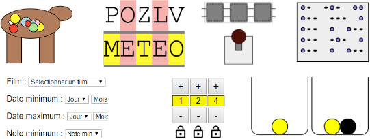

<div id="pageDiscover" class="pageContent">
  <div class="defaultText">
    <h1>Les épreuves précédentes</h1>
    <div class="section">
      <h2>Accès aux épreuves précédentes</h2>
      <p>Les épreuves du premier tour sont <a href="http://epreuve.concours-alkindi.fr" target="_blank">accessibles ici</a>.
      </p>
      <p class="txtcenter mtl"><a href="http://epreuve.concours-alkindi.fr" target="_blank"></a>
      </p>
      <p>Les coordinateurs/coordinatrices ont accès à l'ensemble des résultats de leurs équipes sur leur <a href="http://coordinateur.concours-alkindi.fr" target="_blank" >interface</a>.</p>
      <p>Les sujets de la finale sont <a target="new" href=docs/Sujets-finale-Alkindi-2018.pdf">accessibles ici</a>.
      </p>
    </div>
    
     <div class="section">
      <h2>Les lauréat·e·s de l'édition : 2017-2018</h2>
      <p>Plus de 52 000 élèves ont participé au premier tour, inscrit·e·s par 1062 enseignant·e·s. Merci à tou·te·s !</p>
      <p>Félicitations aux trois équipes gagnantes :</p>
      <ul>
        <li>Premier prix : William B., Cédric S., Thomas H. et Thien-An T. du Lycée International de l'Est Parisien à Noisy-le-Grand (académie de Créteil).</li>
        <li>Deuxième prix : Robin M. et Nathan H. de l'Institut Notre Dame de Saint-Germain-en-Laye (académie de Versailles).</li>
        <li>Troisième prix : Baptiste V., Léo C., Claire V. et Solal M. du Lycée Claude Monet	de Paris (académie de Paris).</li>
      </ul>
      <p>Les 10 meilleur·e·s élèves de chaque académie ont été invité·e·s à visiter un centre de recherche universitaire ou industriel, pour un total de <a href="#/pageVisits">24 laboratoires</a>.</p>
    </div>

    <div class="section">
      <h2>Les lauréat·e·s de l'édition : 2016-2017</h2>
      <p>Le nombre de participant·e·s a dépassé 47 000 élèves et le nombre d'enseignant·e·s 1500. Merci à tou·te·s !</p>
      <p>Félicitations aux trois équipes gagnantes :</p>
      <ul>
        <li>Premier prix : Maëna Q., Cyprien D., Pierre A. et Vianney L. du Collègue-lycée Franco-Allemand, Buc, académie de Versailles.</li>
        <li>Deuxième prix : Clara W., Centre de formation des apprentis Heinrich Nessel, Haguenau, académie de Strasbourg.</li>
        <li>Troisième prix : Jean Z., Yanis J., Giani N. et Hugo G. Lycée Algoud-Laffemas, Valence, académie de Grenoble.</li>
      </ul>
      <p>Les 10 meilleur·e·s élèves de chaque académie ont été invité·e·s à visiter un centre de recherche universitaire ou industriel, pour un total de 22 laboratoires.</p>
    </div>

    <div class="section">
      <h2>Les lauréat·e·s de l'édition : 2015-2016</h2>
      <p>Plus de 17 000 élèves ont participé à la première édition du concours, coordonné·e·s par plus de 500 enseignant·e·s. Merci à tou·te·s les élèves et enseignant·e·s pour leur participation.</p>
      <p>Félicitations aux trois équipes gagnantes :</p>
      <ul>
        <li>Premier prix : Clara D., Olivier F., Sandy R. et Sébastien B. du Lycée Blaise Pascal, Orsay.</li>
        <li>Deuxième prix : Hugo T., Loïc T., Louise R. et Paul T du Lycée Henri IV, Paris.</li>
        <li>Troisième prix : Laurine S., Ambroise F., Clément W et Nunzia R du Lycée Henri IV, Paris.</li>
      </ul>
    </div>

  </div>
</div>

